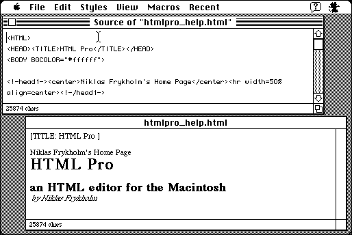

Download
html_pro_1.08.zip (98K) HTML Pro 1.08 68K repackaged into a zipped hfs disk image and checksum file. The disk image can be mounted with Mini vMac.
html_pro_1.08.sit (102K) HTML Pro 1.08 68K in the original format.
copyright: Niklas Frykholm
mod date: Jun 28, 1995
license: shareware
official url :
HTML Pro
An HTML editor, which simultaneously displays source and result. Only supports some of the most basic original HTML tags. Runs in System 6, but requires System 7 for full functionality.

If you find these downloads useful, please consider helping the Gryphel Project, which hosts them.
Here are the md5 checksums for the downloads, signed with Gryphel Key 5:
--------- GRY SIGNED TEXT --------- 3f23623c4e08227c67e412be7ed712dd html_pro_1.08.zip c0428175fc555fbef884c505571bb2b9 html_pro_1.08.sit ------- BEGIN GRY SIGNATURE ------- Gry/4Xa8CFcUzxdN/L7H4LDfmCn8bvqYFfvyE3g/DDE9TePRLFeXAq2SYzIXomGs YWK6I9sZJYdRUW+Y+aKpL1L4cqcli+hW+SXSsHBXFSiAxLO6MGuBpnf6+Og0CYm3 oueW/6Psx6feKVliz6yoa7PHNSfKuKIFG61ZK52ecncNzqo7kEIEiakfeOyuxIpb -------- END GRY SIGNATURE --------